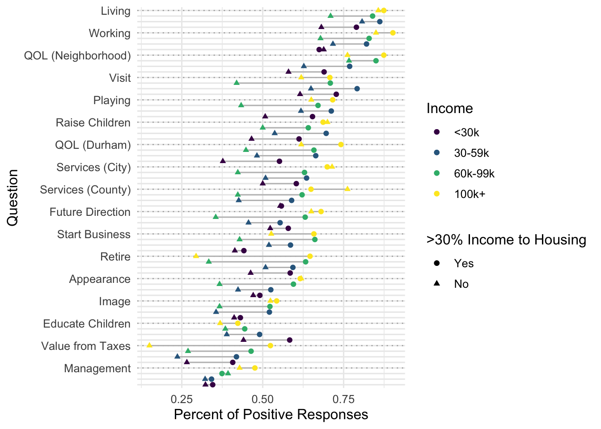

library(tidyverse)
library(janitor)
library(scales)
durham_2020 <- read_csv("./data/durham_2020_cleaner_headers.csv")
durham_2020 <- durham_2020 |>
clean_names() |>
filter(zip != 27709) # Only 1 entryordinal-testing
Setup
other_questions <- c(
"would_you_say_your_total_annual_hous_35",
"what_is_your_age_29",
"do_you_own_or_rent_your_current_resi_31",
"approximately_how_many_years_have_yo_28",
"ease_of_travel_by_bus_godu_18_03"
)
cleaned_responses <- durham_2020 |>
select(
id,
zip,
block_lon,
block_lat,
matches("_3_\\d\\d"),
matches("_24_\\d\\d"),
matches("_12_0\\d"),
all_of(other_questions)
) |>
pivot_longer(
c(
matches("_3_\\d\\d"),
matches("_24_\\d\\d"),
matches("_12_0\\d"),
all_of(other_questions)
),
names_to = "raw_question",
values_to = "response"
) |>
mutate(
Question = recode(
raw_question,
overall_quality_of_services_3_01 = "Services (City)",
overall_quality_of_services_3_02 = "Services (County)",
overall_appearance_of_durham_3_03 = "Appearance",
overall_management_of_develo_3_04 = "Management",
overall_image_of_durham_3_05 = "Image",
overall_quality_of_life_in_d_3_06 = "QOL (Durham)",
overall_quality_of_life_in_y_3_07 = "QOL (Neighborhood)",
overall_value_you_receive_fo_3_08 = "Value from Taxes",
as_a_place_to_live_24_01 = "Living",
as_a_place_to_work_24_02 = "Working",
as_a_place_to_play_24_03 = "Playing",
as_a_place_to_raise_childre_24_04 = "Raise Children",
as_a_place_to_educate_child_24_05 = "Educate Children",
as_a_place_to_retire_24_06 = "Retire",
as_a_place_to_visit_24_07 = "Visit",
as_a_place_to_start_a_busin_24_08 = "Start Business",
as_a_community_that_is_movi_24_09 = "Future Direction",
do_your_monthly_housing_cost_12_01 = "High Rent",
are_you_able_to_find_housing_12_02 = "Find Affordable Housing",
do_you_have_major_home_repai_12_03 = "Cannot Repair Home",
ease_of_travel_by_bus_godu_18_03 = "Ease of Bus",
would_you_say_your_total_annual_hous_35 = "Income",
what_is_your_age_29 = "Age",
do_you_own_or_rent_your_current_resi_31 = "Rent or Own",
approximately_how_many_years_have_yo_28 = "Years in Durham"
),
response = factor(response, ordered = T)
) |>
pivot_wider(
id_cols = c(id, zip, block_lat, block_lon),
names_from = Question,
values_from = response
) |>
mutate(
`Rent or Own` = recode(`Rent or Own`, `1` = "Own", `2` = "Rent", `9` = "Unknown"),
`Income` = recode(`Income`, `1` = "<30k", `2` = "30-59k", `3` = "60k-99k", `4` = "100k+", `9` = "Unknown"),
`Income` = factor(Income, levels = c("<30k", "30-59k", "60k-99k", "100k+", "Unknown")),
`High Rent` = recode(`High Rent`, `1` = "Yes", `2` = "No", `9` = "Unknown"),
`Find Affordable Housing` = recode(`Find Affordable Housing`, `1` = "Yes", `2` = "No", `9` = "Unknown"),
`Cannot Repair Home` = recode(`Cannot Repair Home`, `1` = "Yes", `2` = "No", `9` = "Unknown"),
zip = factor(zip)
)Find question with largest mode
getmode <- function(v) {
uniqv <- unique(v)
uniqv[which.max(tabulate(match(v, uniqv)))]
}
modes <- durham_2020 |>
select_if(is.numeric) |>
pivot_longer(everything()) |>
group_by(name) |>
summarise(
percent_mode = mean(value == getmode(value), na.rm = TRUE),
mode = getmode(value),
num_modes = sum(value == getmode(value), na.rm = TRUE)
)Single Question
Pie Chart
languages <- durham_2020 |> mutate(
primary_language = recode(
what_is_the_primary_language_used_in_34,
`1` = "English",
`2` = "Spanish",
`3` = "Other",
.default = "Unknown"
)
)
# Basic piechart, https://r-graph-gallery.com/piechart-ggplot2.html
languages |>
group_by(primary_language) |>
summarise(value = n()) |>
ggplot(aes(x = "", y = value, fill = primary_language)) +
geom_bar(stat = "identity", width = 1, color = "white") +
coord_polar("y", start = 0) +
theme_void()
Waffle Chart
# https://github.com/liamgilbey/ggwaffle
devtools::install_github("liamgilbey/ggwaffle")Skipping install of 'ggwaffle' from a github remote, the SHA1 (e4f18e9d) has not changed since last install.
Use `force = TRUE` to force installationlibrary(ggwaffle)
waffle_data <- waffle_iron(languages, aes_d(group = primary_language), rows = 30)
ggplot(waffle_data, aes(x, y, fill = group)) +
geom_waffle(size = 0.35) +
coord_equal() +
labs(
x = element_blank(),
y = element_blank(),
title = "Primary Languages of respondents",
fill = "Language"
) +
theme_waffle()Warning: Using the `size` aesthetic in this geom was deprecated in ggplot2 3.4.0.
ℹ Please use `linewidth` in the `default_aes` field and elsewhere instead.Multiple Questions
Stacked Bar Chart
Add annotation to highlight people liking neighborhood better
QOL_questions <- c(
"Services (City)",
"Services (County)",
"Appearance",
"Management",
"Image",
"QOL (Durham)",
"QOL (Neighborhood)",
"Value from Taxes"
)
rating_questions <- c(
"Living",
"Working",
"Playing",
"Raise Children",
"Educate Children",
"Retire",
"Visit",
"Start Business",
"Future Direction"
)
cleaned_responses |>
select(QOL_questions) |>
pivot_longer(QOL_questions, names_to = "Question", values_to = "response") |>
ggplot(aes(Question)) +
geom_bar(aes(fill = forcats::fct_rev(response))) +
scale_x_discrete(guide = guide_axis(n.dodge = 2)) +
scale_fill_manual(
values = c("#999999", scales::viridis_pal()(5)),
labels = c("Missing", 5:1)
) +
labs(fill = "Response", y = "Number of Reponses") +
ggtitle("Responses related to quality")Warning: Using an external vector in selections was deprecated in tidyselect 1.1.0.
ℹ Please use `all_of()` or `any_of()` instead.
# Was:
data %>% select(QOL_questions)
# Now:
data %>% select(all_of(QOL_questions))
See <https://tidyselect.r-lib.org/reference/faq-external-vector.html>.cleaned_responses |>
select(QOL_questions, zip) |>
pivot_longer(QOL_questions, names_to = "Question", values_to = "response") |>
ggplot(aes(Question)) +
geom_bar(aes(fill = forcats::fct_rev(response))) +
scale_fill_manual(
values = c("#999999", viridis_pal()(5)),
labels = c("Missing", 5:1)
) +
labs(fill = "Response", y = "Number of Reponses") +
ggtitle("Responses related to quality by Zip Code") +
facet_wrap(~zip, scales = "free_x", nrow = 4) +
coord_flip() +
theme_minimal()
What do you notice about the typical response for QOL in Neighborhood vs. Durham?
Heatmap/Bubble Chart
rating_questions_children <- cleaned_responses |>
select(c(
`Raise Children`,
`Educate Children`
)) |>
filter(`Raise Children` != 9) |>
filter(`Educate Children` != 9) |>
group_by(`Raise Children`,
`Educate Children`) |>
summarise(num_respondents = n()) |>
ungroup()`summarise()` has grouped output by 'Raise Children'. You can override using
the `.groups` argument.for (raise in unique(rating_questions_children$`Raise Children`)) {
for (educate in unique(rating_questions_children$`Educate Children`)) {
if (nrow(
rating_questions_children |> filter(`Raise Children` == raise,
`Educate Children` == educate)
) == 0) {
# Add 0 respondents if combo does not exist
rating_questions_children <- rating_questions_children |>
add_row(
tibble_row(
`Raise Children` = raise,
`Educate Children` = educate,
num_respondents = 0
)
)
}
}
}
ggplot(rating_questions_children,
aes(x = `Raise Children`, y = `Educate Children`, fill = num_respondents)) +
geom_tile()ggplot(rating_questions_children,
aes(x = `Raise Children`, y = `Educate Children`, fill = num_respondents)) +
geom_tile() +
geom_label(aes(label = num_respondents), color = "white", fill = "black") +
scale_fill_viridis_c(trans = "sqrt")
# Bad
ggplot(rating_questions_children,
aes(x = `Raise Children`, y = `Educate Children`)) +
geom_point(aes(size=num_respondents, color=num_respondents)) +
scale_color_viridis_c() +
scale_size_area()
Are there more respondents above or below the diagnonal? What does this tell you?
Mosaic to illustrate marginals
# Looks to still be broken
library(ggmosaic)
# Fill is broken
ggplot(data = rating_questions_children) +
ggmosaic::geom_mosaic(aes(x = ggmosaic::product(`Raise Children`, `Educate Children`),
weight = num_respondents))Warning: Computation failed in `stat_mosaic()`
Caused by error in `str2lang()`:
! <text>:1:12: unexpected symbol
1: weight~ x__`Raise Children`
^
Tree Map
library(treemap)
rating_questions_children |>
mutate(
Raise = paste("Raise:", `Raise Children`),
Educate = paste("Educate:", `Educate Children`)
) |>
treemap(
index = c("Raise", "Educate"),
vSize = "num_respondents",
position.legend = "right"
)Fancier
Rader/Spider Chart (superimpose?)
Probably going to skip because annoying to make and not of much value.
cleaned_responses |>
select(zip, rating_questions) |>
pivot_longer(rating_questions, names_to = "Question", values_to = "response") |>
filter(response < 9) |>
ggplot(aes(x = Question, y = as.numeric(response))) +
geom_bar(stat = "summary", fun = "median") +
coord_polar() +
facet_wrap(~zip)Warning: Using an external vector in selections was deprecated in tidyselect 1.1.0.
ℹ Please use `all_of()` or `any_of()` instead.
# Was:
data %>% select(rating_questions)
# Now:
data %>% select(all_of(rating_questions))
See <https://tidyselect.r-lib.org/reference/faq-external-vector.html>.
ggtern
library(ggtern)Registered S3 methods overwritten by 'ggtern':
method from
grid.draw.ggplot ggplot2
plot.ggplot ggplot2
print.ggplot ggplot2--
Remember to cite, run citation(package = 'ggtern') for further info.
--
Attaching package: 'ggtern'The following objects are masked from 'package:ggplot2':
aes, annotate, ggplot, ggplot_build, ggplot_gtable, ggplotGrob,
ggsave, layer_data, theme_bw, theme_classic, theme_dark,
theme_gray, theme_light, theme_linedraw, theme_minimal, theme_voidcleaned_responses |>
mutate(`Income` = as.numeric(`Income`)) |>
ggtern(aes(`Years in Durham`, `Age`, `Income`)) +
geom_point()Lollipop
income_info <- cleaned_responses |>
select(
Income,
`Rent or Own`,
`High Rent`,
all_of(rating_questions),
all_of(QOL_questions)
) |>
pivot_longer(all_of(c(rating_questions, QOL_questions)),
names_to = "Question",
values_to = "Response"
) |>
filter(Response != 9, `High Rent` != "Unknown", Income != "Unknown") |>
group_by(Income, Question) |>
summarise(
mean_response_high_rent = mean(as.numeric(Response[which(`High Rent` == "Yes")])),
mean_response_low_rent = mean(as.numeric(Response[which(`High Rent` == "No")])),
percent_positive_high_rent = mean(Response[which(`High Rent` == "Yes")] > 3),
percent_positive_low_rent = mean(Response[which(`High Rent` == "No")] > 3),
percent_positive_overall = mean(Response > 3)
) |>
ungroup()`summarise()` has grouped output by 'Income'. You can override using the
`.groups` argument.income_info |>
ggplot(aes(y = Question, color = `High Rent`)) +
geom_segment(
aes(
x = percent_positive_low_rent,
xend = percent_positive_high_rent,
yend = Question
),
color = "Grey"
) +
geom_point(aes(
x = percent_positive_low_rent,
color = "Red"
)) +
geom_point(aes(
x = percent_positive_high_rent,
color = "Blue"
)) +
labs(x = "Percent of Positive Responses") +
scale_color_manual(
name = ">30% Income to Housing",
values = c("Red", "Blue"),
labels = c("Yes", "No")
) +
facet_wrap(~Income)income_info |>
ggplot(aes(y = interaction(Income, Question), color = `High Rent`)) +
geom_segment(
aes(
x = percent_positive_low_rent,
xend = percent_positive_high_rent,
yend = interaction(Income, Question)
),
color = "Grey"
) +
geom_point(aes(x = percent_positive_low_rent,
color = "Red",
shape = Income)) +
geom_point(aes(x = percent_positive_high_rent,
color = "Blue",
shape = Income)) +
labs(x = "Percent of Positive Responses") +
scale_color_manual(name = ">30% Income to Housing",
values = c("Red", "Blue"),
labels = c("Yes", "No")) +
scale_y_discrete(breaks = paste("100k+", unique(income_info$Question), sep="."),
labels = unique(income_info$Question))Warning: Using shapes for an ordinal variable is not advised
Lollipop with small improvements
Organize by mean on y, ordinal color scale for income, shape for rent, hlines to help pick out questions
mean_positive_per_question <- cleaned_responses |>
select(
Income,
`High Rent`,
all_of(rating_questions),
all_of(QOL_questions)
) |>
pivot_longer(all_of(c(rating_questions, QOL_questions)),
names_to = "Question",
values_to = "Response"
) |>
filter(Response != 9, `High Rent` != "Unknown", Income != "Unknown") |>
group_by(Question) |>
summarise(percent_positive = mean(Response > 3))
income_info_2 <- income_info |>
full_join(mean_positive_per_question, by = "Question") |>
arrange(percent_positive, Income) |>
mutate(
y_axis_position = factor(row_number()),
label = if_else(Income == "100k+", Question, "")
) |>
mutate(y_axis_position = factor(y_axis_position))
income_info_2 |>
ggplot(aes(y = y_axis_position, color = Income)) +
geom_hline(
yintercept = seq(4, 68, 4),
color = "black",
alpha = 0.3,
linetype = "dotted"
) +
geom_segment(
aes(
x = percent_positive_low_rent,
xend = percent_positive_high_rent,
yend = y_axis_position
),
color = "Grey"
) +
geom_point(aes(
x = percent_positive_low_rent,
shape = "circle"
)) +
geom_point(aes(
x = percent_positive_high_rent,
shape = "triangle"
)) +
labs(x = "Percent of Positive Responses") +
scale_shape_manual(
name = ">30% Income to Housing",
values = c("circle", "triangle"),
labels = c("Yes", "No")
) +
scale_y_discrete(
labels = income_info_2$label,
breaks = 1:nrow(income_info_2)
) +
labs(y = "Question") +
theme_minimal()
Parallel Coordinates
Order by mode on x?
data_for_parallel <- cleaned_responses |>
filter(`High Rent` != "Unknown", `Rent or Own` != "Unknown") |>
select(id, `High Rent`, `Rent or Own`, QOL_questions, Income) |>
pivot_longer(QOL_questions, names_to = "Question", values_to = "Response")
mode_response_for_question <- data_for_parallel |>
group_by(Question) |>
summarise(
number_of_mode = mean(Response == 4),
mean = mean(as.numeric(Response))
) |>
arrange(desc(number_of_mode)) |>
mutate(x_index = row_number())
data_for_parallel2 <- full_join(data_for_parallel, mode_response_for_question, by = "Question")
# Change x = x_index for mode ordering, did not improve much
data_for_parallel2 |>
ggplot(aes(x = Question, y = Response, group = id, color = Income)) +
geom_line(alpha = 0.3, position = position_dodge(w = 0.3)) +
scale_x_discrete(guide = guide_axis(n.dodge = 2)) +
facet_grid(`High Rent` ~ `Rent or Own`) +
theme_minimal() +
theme(legend.position = "bottom")
Alluvial
That’s not too bad, but we can measure the “flow” from question to question better with Alluvial plots because they will scale with the number of responses, although we lose the ability to identify specific survey takers.
library(ggalluvial)
ggplot(
data_for_parallel,
aes(
x = Question, stratum = Response, alluvium = id,
y = 1,
fill = Response, label = Response
)
) +
scale_x_discrete(expand = c(.1, .1)) +
geom_flow() +
geom_stratum(alpha = .5) +
geom_text(stat = "stratum", size = 3) +
theme(legend.position = "none") +
scale_x_discrete(guide = guide_axis(n.dodge = 2))Scale for x is already present.
Adding another scale for x, which will replace the existing scale.Warning: `spread_()` was deprecated in tidyr 1.2.0.
ℹ Please use `spread()` instead.
ℹ The deprecated feature was likely used in the ggalluvial package.
Please report the issue at
<]8;;https://github.com/corybrunson/ggalluvial/issueshttps://github.com/corybrunson/ggalluvial/issues]8;;>.Warning: The `.dots` argument of `group_by()` is deprecated as of dplyr 1.0.0.
ℹ The deprecated feature was likely used in the dplyr package.
Please report the issue at <]8;;https://github.com/tidyverse/dplyr/issueshttps://github.com/tidyverse/dplyr/issues]8;;>.
Missing Data
cleaned_responses |>
select(`Ease of Bus`, zip) |>
ggplot(aes(zip)) +
geom_bar(aes(fill = forcats::fct_rev(factor(`Ease of Bus`))), position="fill") +
scale_fill_manual("Response",
values = c("#999999", scales::viridis_pal()(5)),
labels = c("Missing", 5:1))
cleaned_responses |>
select(`Ease of Bus`, `Income`) |>
ggplot(aes(Income)) +
geom_bar(aes(fill = forcats::fct_rev(factor(`Ease of Bus`))), position="fill") +
scale_fill_manual("Response",
values = c("#999999", scales::viridis_pal()(5)),
labels = c("Missing", 5:1))
Location Data
Density and point map
library(zipcodeR)
library(tigris)To enable caching of data, set `options(tigris_use_cache = TRUE)`
in your R script or .Rprofile.zip_codes <- c(unique(durham_2020$zip), 27709, 27708, 27710)
zip_locs <- reverse_zipcode(zip_codes)
geo <- zctas(cb = TRUE, starts_with = zip_codes)Retrieving data for the year 2020ZCTAs can take several minutes to download. To cache the data and avoid re-downloading in future R sessions, set `options(tigris_use_cache = TRUE)`
|
| | 0%
|
| | 1%
|
|= | 1%
|
|= | 2%
|
|== | 2%
|
|== | 3%
|
|== | 4%
|
|=== | 4%
|
|=== | 5%
|
|==== | 5%
|
|==== | 6%
|
|===== | 6%
|
|===== | 7%
|
|===== | 8%
|
|====== | 8%
|
|====== | 9%
|
|======= | 9%
|
|======= | 10%
|
|======= | 11%
|
|======== | 11%
|
|======== | 12%
|
|========= | 12%
|
|========= | 13%
|
|========= | 14%
|
|========== | 14%
|
|========== | 15%
|
|=========== | 15%
|
|=========== | 16%
|
|============ | 16%
|
|============ | 17%
|
|============ | 18%
|
|============= | 18%
|
|============= | 19%
|
|============== | 19%
|
|============== | 20%
|
|============== | 21%
|
|=============== | 21%
|
|=============== | 22%
|
|================ | 22%
|
|================ | 23%
|
|================ | 24%
|
|================= | 24%
|
|================= | 25%
|
|================== | 25%
|
|================== | 26%
|
|=================== | 26%
|
|=================== | 27%
|
|=================== | 28%
|
|==================== | 28%
|
|==================== | 29%
|
|===================== | 29%
|
|===================== | 30%
|
|===================== | 31%
|
|====================== | 31%
|
|====================== | 32%
|
|======================= | 32%
|
|======================= | 33%
|
|======================= | 34%
|
|======================== | 34%
|
|======================== | 35%
|
|========================= | 35%
|
|========================= | 36%
|
|========================== | 36%
|
|========================== | 37%
|
|========================== | 38%
|
|=========================== | 38%
|
|=========================== | 39%
|
|============================ | 39%
|
|============================ | 40%
|
|============================ | 41%
|
|============================= | 41%
|
|============================= | 42%
|
|============================== | 42%
|
|============================== | 43%
|
|============================== | 44%
|
|=============================== | 44%
|
|=============================== | 45%
|
|================================ | 45%
|
|================================ | 46%
|
|================================= | 46%
|
|================================= | 47%
|
|================================= | 48%
|
|================================== | 48%
|
|================================== | 49%
|
|=================================== | 49%
|
|=================================== | 50%
|
|=================================== | 51%
|
|==================================== | 51%
|
|==================================== | 52%
|
|===================================== | 52%
|
|===================================== | 53%
|
|===================================== | 54%
|
|====================================== | 54%
|
|====================================== | 55%
|
|======================================= | 55%
|
|======================================= | 56%
|
|======================================== | 56%
|
|======================================== | 57%
|
|======================================== | 58%
|
|========================================= | 58%
|
|========================================= | 59%
|
|========================================== | 59%
|
|========================================== | 60%
|
|========================================== | 61%
|
|=========================================== | 61%
|
|=========================================== | 62%
|
|============================================ | 62%
|
|============================================ | 63%
|
|============================================ | 64%
|
|============================================= | 64%
|
|============================================= | 65%
|
|============================================== | 65%
|
|============================================== | 66%
|
|=============================================== | 66%
|
|=============================================== | 67%
|
|=============================================== | 68%
|
|================================================ | 68%
|
|================================================ | 69%
|
|================================================= | 69%
|
|================================================= | 70%
|
|================================================= | 71%
|
|================================================== | 71%
|
|================================================== | 72%
|
|=================================================== | 72%
|
|=================================================== | 73%
|
|=================================================== | 74%
|
|==================================================== | 74%
|
|==================================================== | 75%
|
|===================================================== | 75%
|
|===================================================== | 76%
|
|====================================================== | 76%
|
|====================================================== | 77%
|
|====================================================== | 78%
|
|======================================================= | 78%
|
|======================================================= | 79%
|
|======================================================== | 79%
|
|======================================================== | 80%
|
|========================================================= | 81%
|
|========================================================= | 82%
|
|========================================================== | 82%
|
|========================================================== | 83%
|
|========================================================== | 84%
|
|=========================================================== | 84%
|
|=========================================================== | 85%
|
|============================================================ | 85%
|
|============================================================ | 86%
|
|============================================================= | 86%
|
|============================================================= | 87%
|
|============================================================= | 88%
|
|============================================================== | 88%
|
|============================================================== | 89%
|
|=============================================================== | 89%
|
|=============================================================== | 90%
|
|=============================================================== | 91%
|
|================================================================ | 91%
|
|================================================================ | 92%
|
|================================================================= | 92%
|
|================================================================= | 93%
|
|================================================================= | 94%
|
|================================================================== | 94%
|
|================================================================== | 95%
|
|=================================================================== | 95%
|
|=================================================================== | 96%
|
|==================================================================== | 96%
|
|==================================================================== | 97%
|
|==================================================================== | 98%
|
|===================================================================== | 98%
|
|===================================================================== | 99%
|
|======================================================================| 99%
|
|======================================================================| 100%ggplot(geo) +
geom_sf() +
geom_point(
data = cleaned_responses,
aes(
x = block_lon / 1e6,
y = block_lat / 1e6,
color = Income
),
alpha = 0.3
) +
theme_void()Coordinate system already present. Adding new coordinate system, which will
replace the existing one.Warning: Removed 29 rows containing missing values (`geom_point()`).ggplot(geo) +
geom_sf() +
geom_point(
data = cleaned_responses,
aes(
x = block_lon / 1e6,
y = block_lat / 1e6,
color = Income
),
alpha = 0.3
) +
geom_density_2d(
data = cleaned_responses,
aes(
x = block_lon / 1e6,
y = block_lat / 1e6,
color = Income
)
) +
scale_color_manual(
values = c(scales::viridis_pal()(5)[1:4], "#999999"),
labels = c(cleaned_responses$Income, "Unknown")
) +
facet_wrap(~`Income`) +
theme_void()Coordinate system already present. Adding new coordinate system, which will
replace the existing one.Warning: Removed 29 rows containing non-finite values (`stat_density2d()`).
Removed 29 rows containing missing values (`geom_point()`).# Mode is 60-99k and 30-59k, slightly behind, unknown seems to match it slightly
table(cleaned_responses$Income)
<30k 30-59k 60k-99k 100k+ Unknown
146 201 204 177 119 Chloropleth
percent_does_not_use_bus <- cleaned_responses |>
group_by(zip) |>
summarise(bus_usage = sum(`Ease of Bus` %in% 2:5) / n())
joined_data <- full_join(geo, percent_does_not_use_bus, by = c("ZCTA5CE20" = "zip"))
ggplot(joined_data) +
geom_sf(aes(fill = bus_usage)) +
theme_void()Coordinate system already present. Adding new coordinate system, which will
replace the existing one.Chloropleth of percent or facet by bin
https://www.data-to-viz.com/caveat/spider.html
https://cran.r-project.org/web/packages/ggalluvial/vignettes/ggalluvial.html
https://r-charts.com/flow/sankey-diagram-ggplot2/
Resources
https://will-ball.github.io/ordinalplots/
https://haleyjeppson.github.io/ggmosaic/reference/geom_mosaic.html#:~:text=geom_mosaic.Rd,%2C%20offset%20%3D%200.01%2C%20show.